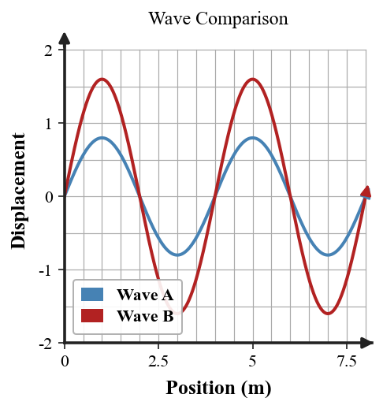

Six-question DOK check for Section 5.1: 2 DOK 1, 2 DOK 2, 1 DOK 3, and 1 DOK 4.
Concept check during the wave-model review: Complete the statement: frequency is the number of complete cycles that occur each ______. Answer as if you were checking another student’s model.
Concept check during the wave-model review: On a longitudinal-wave model, name the crowded region and the spread-out region. Answer as if you were checking another student’s model.
Independent practice — wave-model review: A wave has the same wavelength but a larger amplitude. State which measured wave property changed and which stayed the same in this comparison. Interpret the result in the situation, not just as a number.

Independent practice — wave-model review: A peer reviewer measures 1.5 m from crest to crest and counts 8 cycles each second. Identify the wavelength and frequency, then calculate speed. Interpret the result in the situation, not just as a number.
Model critique — wave-model review: Evaluate the difference between two waves in the same medium: one has greater amplitude, while the other has greater frequency. Explain what each difference tells you and what cannot be concluded without more evidence. Finish with a corrected physics statement.
Transfer challenge — wave-model review: A peer reviewer claims Wave A carries more energy only because it has a longer wavelength. Evaluate the claim and build a better evidence-based comparison using amplitude, frequency, medium, and wave type. Defend the model or design and identify what evidence would strengthen it.